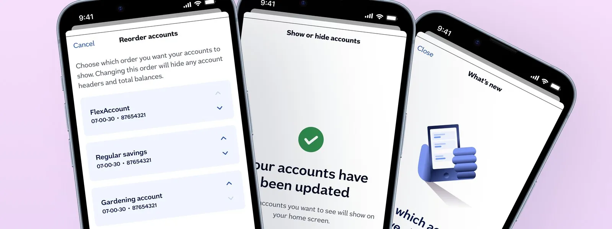
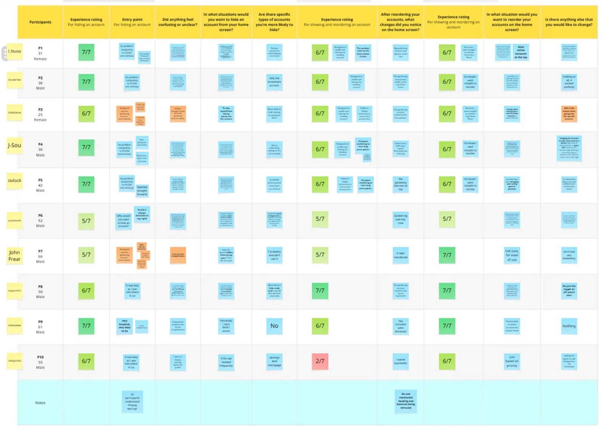
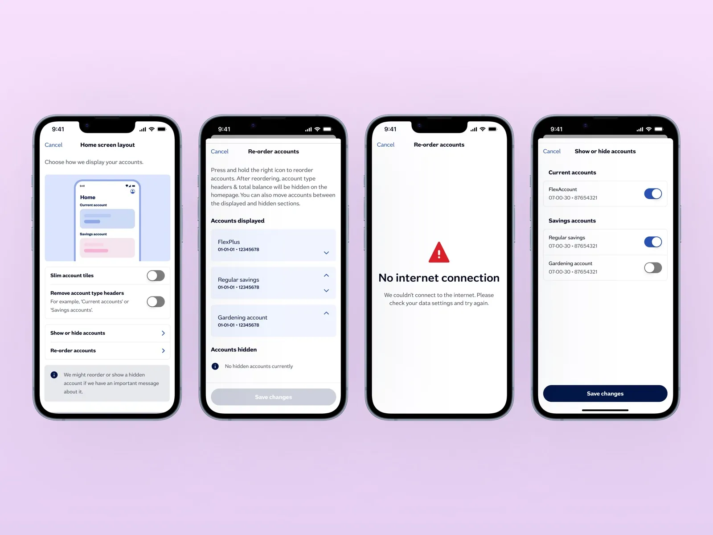
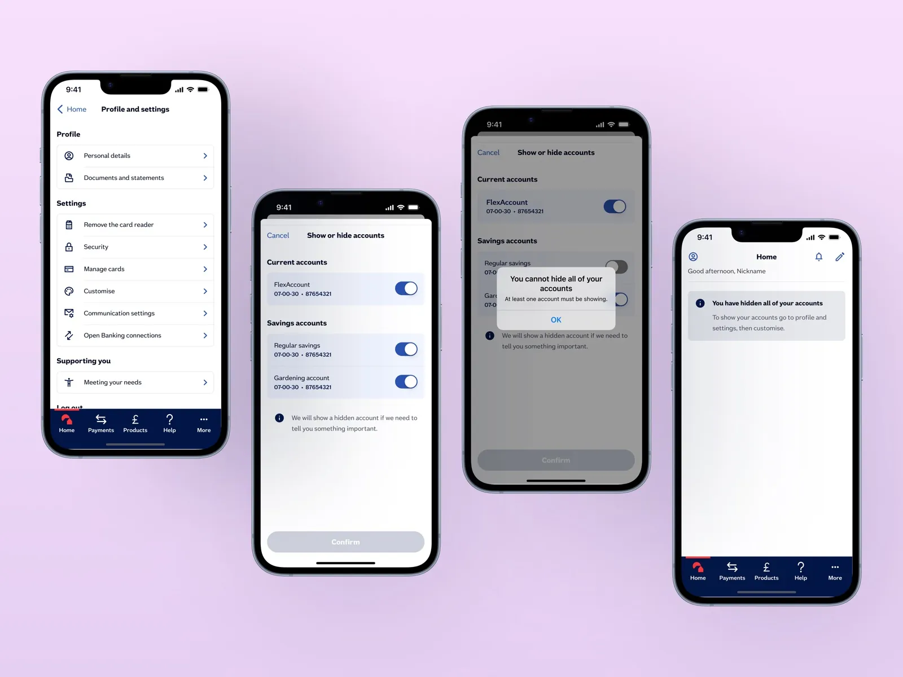

Nationwide Building Society — Case Study
Show/Hide & Re-Order Accounts
Enhancing account personalization and content control.

Customizing the Dashboard Experience
Following the comprehensive redesign of Nationwide's mobile banking app to modernize authentication and navigation, the introduction of two new features — Account Show/Hide and Account Reorder — aimed to empower users to customize their dashboard experience on the homepage. These features enable users to hide less active accounts from their dashboard and reorder accounts to their preference for easier access.
Client Motivation
The client identified an opportunity to enhance user satisfaction by providing personalization options that allow users to control what accounts they see and in what order, streamlining their interaction with the app and reducing cognitive load.
Target Users
The feature targeted a broad demographic of banking app users aged 18 to 80 who actively use current and savings accounts. The intent was to appeal equally across gender and user proficiency levels while considering typical banking app usage patterns.
What Testing Revealed
User testing revealed challenges in account discoverability, with average task completion times of 2 minutes 40 seconds to find accounts. Savings accounts were most commonly hidden by users to avoid temptation for spending. However, users initially misunderstood that reordering accounts affected category headings, highlighting areas for improved UI clarity. Confirmation screens indicating progress (e.g., "A of B") were well understood.

A Consistent Vision, Rapid Iteration
The design process involved frequent standup meetings with the project manager and close collaboration with an onshore UX researcher. As the sole designer working on the feature, this enabled maintaining a consistent vision and rapid iteration through continuous feedback and teamwork.
Personalization, Made Discoverable
- Implemented toggles for show/hide functionality on accounts directly from the dashboard
- Enabled drag-and-drop or menu-based reorder of accounts to prioritize those most relevant
- Added microcopy and confirmation states to reinforce user actions
- Proposed inclusion of 'More options' icons and tooltips to enhance discoverability and guide users through new functionality


Friction Removed, Validated in Testing
Formal usage metrics weren't available within the engagement window, but qualitative feedback from testing was consistently positive: users specifically called out the ability to hide dormant savings accounts and reorder by relevance as removing a recurring source of friction on the dashboard. The confirmation-state pattern validated in testing ("A of B" progress) shipped as designed.
Future Considerations
This experience reinforced the value of ongoing user engagement and iterative refinement of personalization within banking apps. Future projects will continue prioritizing usability, customization, and accessibility to meet diverse user needs.